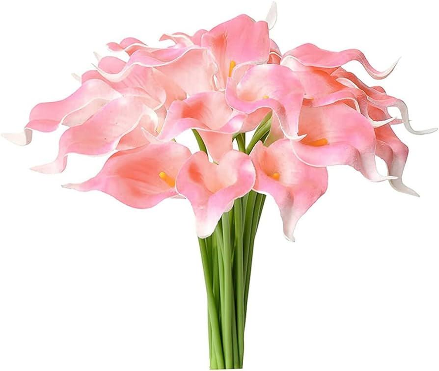
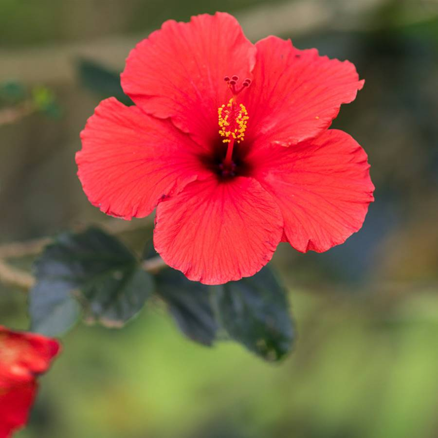
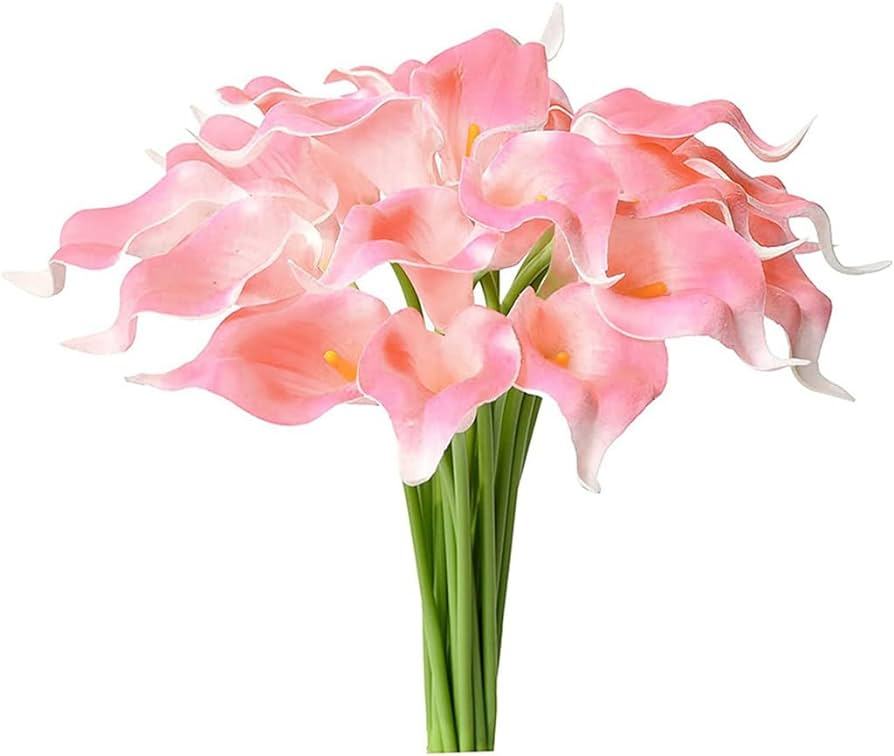
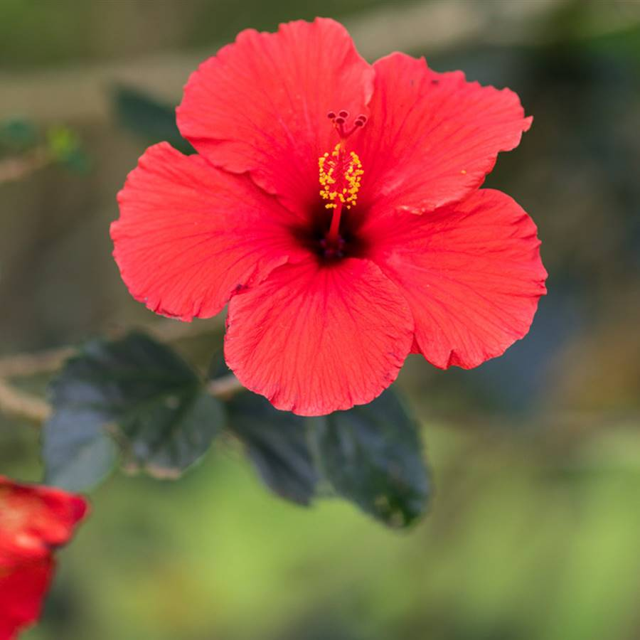

Flores Exóticas
Las flores exóticas son conocidas por su belleza única y sus colores vibrantes. Entre las más populares se encuentran:
- Orquídeas
- Lirios del Amazonas
- Hibiscos
Estas flores no solo son hermosas, sino que también tienen significados especiales en diferentes culturas y son apreciadas por su rareza y elegancia.
 


